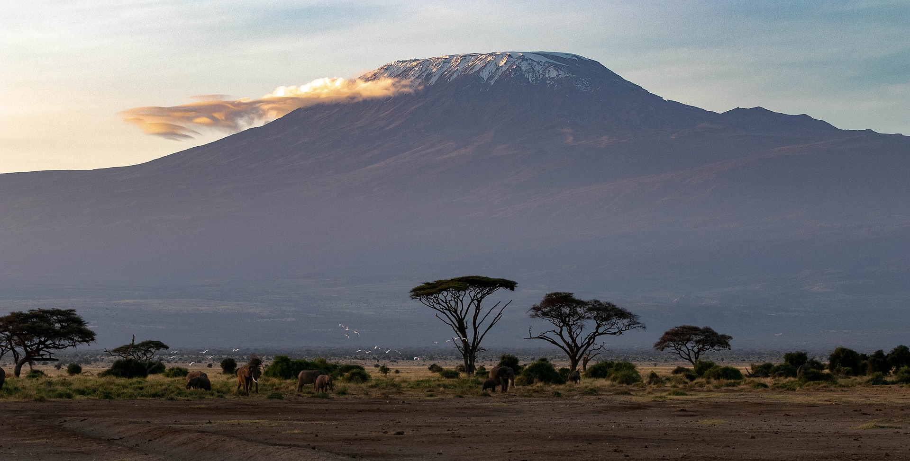

The planet we live in

We need to take care of her better than we are doing right now. Climate change is real my people!
Flora

I love trees. Beautiful aren't they? Makes you just want to tale a deep breath in and then out. Now take a look at this
{kind=link}
The sad reality is that more and more forests are being cut down to make room for agriculture. Our need for food is driving out forests to extiction. But it does not have to be this way. We can find sustainable ways of farming while presrving our forests. We are problem solvers. Plant trees!
Fauna
I'm especially in love with wildlife. In a few years if poaching does not stop, these images are all we are going to have left of these majestic creatures. End ivory trade!. Stop poaching! Preserve our wildlife!
Beautiful sceneries
I woukd just love to visit some of these beautiful places
Puppies
Yep, I'm a dog person. I just love these furry creatures. We could learn so much from them, not only are they loyal but if you treat them right, they can be very caring and are also pretty smart.
Cycling
I just love cycling. That's all I'll say about that :)
Bacon
bacon bacon bacon bacon bacon bacon bacon bacon
Japanese Anime

I do consider myself a lover of arts. And Japanese anime is one of my favorite espressions of that art. Check out Monster by Mitchel Saltzman (Thank me later)